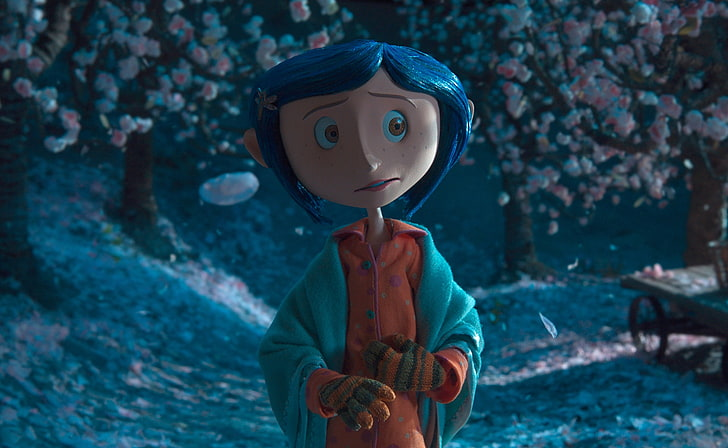
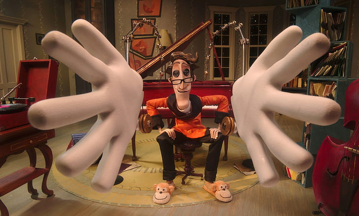

Enquanto explora sua nova casa à noite, a pequena Coraline descobre uma porta secreta que contém um mundo parecido com o dela, porém melhor em muitas maneiras. Todos têm botões no lugar dos olhos, os pais são carinhosos e os sonhos de Coraline viram realidade por lá. Ela se encanta com essa descoberta, mas logo percebe que segredos estranhos estão em ação: uma outra mãe e o resto de sua família tentam mantê-la eternamente nesse mundo paralelo.
Ano de lançamento: 13 de fevereiro de 2009 No cinema / 1h 40min / Animação, Fantasia, Família
Direção: Henry Selick
Produzido em Stop Motion
Produtora: Laika
Autor: Neil Gaiman
Outra Mãe/Teri Hatcher
Wybie Lovat/Robert Bailey Jr.
Coraline Jones/Dakota Fanning
Sr. Bobinsky/Ian McShane
Outro Pai/John Hodgman
Srta. Spink/Jennifer Saunders
Gato/Keith David
Pai da Coraline/John Hodgman
Srta. Forcible/Dawn French
Mãe/Teri Hatcher
Publicado pela primeira vez em 2002, Coraline foi o primeiro livro de Neil Gaiman para o público infantojuvenil e se tornou uma das obras mais emblemáticas do escritor. Repleta de elementos ao mesmo tempo sombrios e lúdicos, a história conquistou crianças e adultos em todo o mundo e, em 2009, ganhou as telas de cinema em uma animação dirigida por Henry Selick, de O estranho mundo de Jack. Nesta edição especial em capa dura, com introdução do autor e projeto gráfico exclusivo, coube ao renomado ilustrador Chris Riddell dar vida ao universo mágico e aterrorizante criado por Neil Gaiman.
Ao abrir uma porta misteriosa na sala de casa, a menina se depara com um lugar macabro e fascinante. Ali, naquele outro mundo, seus outros pais são criaturas muito pálidas, com botões negros no lugar dos olhos, sempre dispostos a lhe dar atenção, fazer suas comidas preferidas e mostrar os brinquedos mais divertidos. Coraline enfim se sente... em casa. Mas essa sensação logo desaparece, quando ela descobre que o lugar guarda mistérios e perigos, e a menina se dá conta de que voltar para sua verdadeira casa vai ser muito mais difícil — e assustador — do que imaginava.